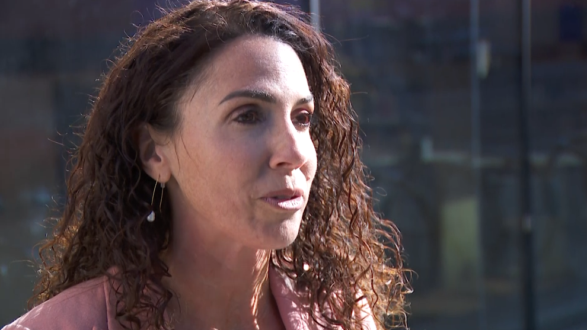
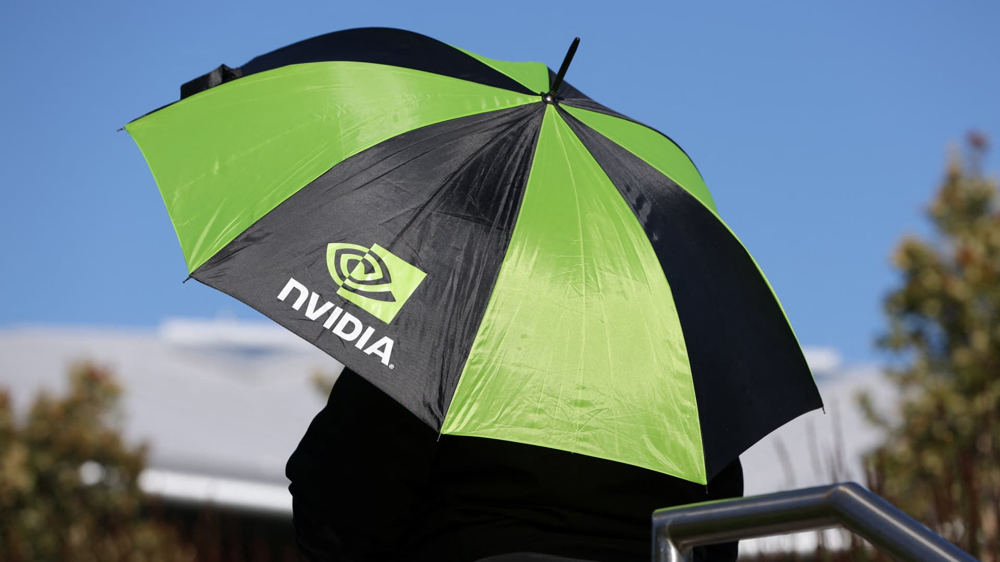
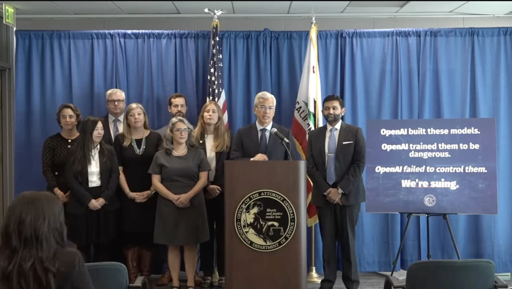

01

公众信息会议：景观噪音条例
Public Information Session: Landscaping Noise Bylaw
了解在特别市镇会议之前提议的燃气动力吹叶机条例。
Learn more about the proposed gas-powered leaf blower bylaw before Special Town Meeting.
原始报道 / Original source ↗DAILY NEWS · 每日新闻简报
Independent AI-assisted summaries of linked reports. Headlines, dates and source URLs are supplied by NewsAPI; summaries are not independent verification of full articles. Please read original reports for details.
Public Information Session: Landscaping Noise Bylaw
了解在特别市镇会议之前提议的燃气动力吹叶机条例。
Learn more about the proposed gas-powered leaf blower bylaw before Special Town Meeting.
原始报道 / Original source ↗Kevin Byard acknowledges on WEEI that Drake Maye is ‘probably done’ for season
凯文·比亚德在WEEI上表示，德雷克·梅耶可能本赛季结束。
Kevin Byard acknowledges on WEEI that Drake Maye is ‘probably done’ for season.
原始报道 / Original source ↗A measure pitched as promising more ‘starter homes’ failed at the ballot. Maura Healey wants the Legislature to pass it.
毛拉·希利希望州立法机构简化在小地块上建设‘起步房屋’的程序。
Governor Maura Healey wants the state Legislature to make it easier to build so-called 'starter homes' on smaller lots around the state after voters narrowly rejected a ballot question.
原始报道 / Original source ↗
Mass. auditor Diana DiZoglio fights to keep lawsuit alive over Senate audit records
马萨诸塞州审计员戴安娜·迪佐格里在法庭上请求法官不要驳回她对立法机构的诉讼。
Massachusetts State Auditor Diana DiZoglio is back in court, asking a judge not to dismiss her lawsuit against the legislature.
原始报道 / Original source ↗Jayson Tatum details his frustrations with 2024 Olympics benching: ‘It was hard to process’
塔图姆透露了他意识到事情不对劲的时刻，并谈到了这一过程为何令人沮丧。
Tatum revealed the moment when he knew something fishy was going on and spoke about why the process was frustrating.
原始报道 / Original source ↗布伦特原油与WTI美国原油最新市场行情。
Brent and WTI crude oil market quotations.
价格及更新时间以行情提供方为准。
Investors look to Nvidia's earnings and Anthropic's IPO to refresh the tech rally
市场环境对Anthropic的IPO比SpaceX的首次亮相更为有利。
How the market set-up is more favorable for the Anthropic IPO than the lead-up to SpaceX's debut.
原始报道 / Original source ↗
Nvidia closes lower ahead of earnings as company reels from Huang resignation
投资者正在权衡前首席执行官黄仁勋辞职的后果。
Investors have been weighing the fallout from former CEO Jensen Huang's resignation.
原始报道 / Original source ↗Republicans outspent Democrats for first time in over a decade in record 2026 midterm election political ad blitz
共和党在全国和州选举中首次略微超越民主党。
Republicans slightly outspent Democrats for the first time as Democrats swept national and state elections.
原始报道 / Original source ↗Trump is in Asia ahead of Xi, Putin summit. And, tech leaders want Huang back at Nvidia
特朗普表示他计划在亚洲之行中讨论乌克兰，矛盾于白宫之前的声明。
Trump says he plans to discuss Ukraine during his Asia trip, which contradicts what the White House previously announced.
原始报道 / Original source ↗
California sues OpenAI over hacking risks
加州检察长在Hugging Face攻击后开始调查OpenAI，并表示此次攻击是由于OpenAI的安全措施不当而‘完全可以预见’。
The state's attorney general started investigating OpenAI after the Hugging Face attack and now says this attack was 'entirely foreseeable' due to OpenAI's poor security practices.
原始报道 / Original source ↗Iran launches a third round of strikes on Bahrain, host of U.S. Navy's 5th Fleet
伊朗在周二向巴林的一处美国雷达设施发射无人机，美国对此进行了报复。
Iran fired drones on Tuesday at a U.S. radar facility in Bahrain, and the U.S. retaliated by firing at Iranian targets along an important shipping route.
原始报道 / Original source ↗